TABLE OF
CONTENTS
-select a story below-
Getting to Know:
Jessica Robblee
The Dogs of
The Arvada Center
INSIDE THE
BLACK BOX


The denizens of Colorado are about as pup friendly as it gets and the staff of the Arvada Center is no exception. We asked if anyone would like to share photos and stories of their four-legged friends in honor of Sylvia and the adorable pictures came flooding in.
Blu
Layne Ely | Scenic Carpenter & Painter
This is my dog, Blu. She is a charcoal lab and just turned 7 years old. It was actually my sister that found Blu needing a home and gave her to me as a birthday gift. Blu is a trained ESA and has immensely impacted my life for the better. She has been my reason to get out of bed when I felt like it was impossible. She has a personality that is goofy and loving and makes everyone smile. Sometimes she acts like toddler with her “dead bunny” stuffed toy and other times she’s a great dunk hunting buddy. She loves all the attention she can get her paws on and is very cuddly. I couldn’t image the last 7 years without her.
Tucker & Zigzag
Liv Murrow |
We adopted Tucker as a puppy in 2002, and we rescued Ziggy from a hoarder at 1 year old in 2005. They immediately bonded and became brothers, with Zigzag always deferring to Tucker. Having dogs growing up was a blessing, because I had a lot of recurring health problems, and helping to take care of them and taking them on long explorations of our local open space gave me something to focus on, and I know they loved me as much as I loved them.
Frankie
Bebe Alexander | Ceramics Program Coordinator
This is Frankie (Frank, Franklin). He is a 9 year old mystery doodle (otherwise known as a Frankendoodle).
I got Frankie from a friend who fosters dogs in Tennessee. She had posted a photo of her newest foster puppies, and as soon as I saw him I knew he was my new friend. Frank was transported to Colorado by a chain of volunteers from Memphis to Little Rock, on to Oklahoma City and up through Kansas to Denver. I picked him up in a parking lot from a van that was filled with newly adopted dogs.
I have always had dogs, and my life would feel empty without them. Each dog is unique, just like a human, and they each bring their own gifts to your life. Frankie is a great friend and greets me like he hasn’t seen me in months every time I walk in the door. He is losing his vision so we have been on a mission for the last year to take as many walks, and spot as many bunnies, as possible before he is completely blind. I love that dogs live in the moment with no regrets, thoughts of “what if’s”, or worry about the future.
Abby & Edison
Sarah Kolb | Digital Communications Manager
We adopted Edison at 10 weeks old - and we were warned about her powerful personality even at that age. Abby came from the Boulder Humane Society four years ago. Corgis don’t pop up in shelters very often (because they’re the best) so we stood in line to be sure we could take her home. She had some trauma in her previous life but is slowly coming into her own.
Sydney, Annie, and Max
Julie Payne | FRYS/Theatre Education Coordinator
Dogs have always been a part of our lives and my husband, David and I currently have three of them. Two are beagle mixes and one is a chihuahua terrier mix. They are all rescue dogs and two are what they call, “foster failures” meaning a foster that you keep. We fostered around 35 dogs and ended up keeping two. Sydney, one of the beagle mix dogs, is the oldest at seventeen. We adopted her in 2008 and although she is now very wobbly and completely deaf, she is still the velvet heartbeat at our feet. We fostered Annie, a sweet beagle/pit mix and thought she might never find a home because she came with chemical burns on her hind end and side, she was bone thin, and had a tattered ear and runny eye. Well, she found a home. We fondly nicknamed her Sad Fannie Annie, and despite her rough beginnings, she has the sweetest disposition. Max (Maximus Minimus) is also a foster failure and a boomerang. He got adopted and was returned for behavior issues. He’s ten pounds of trouble, he rules the roost, and, as you can see from the photos, is quite the publicity hound. It’s a good thing he’s cute.
Lola
Amber Gale | Box Office Manager
Here is my dog Lola. She has gone completely blind over the last two years. She now sees with nose and doesn’t let her loss of sight slow her down.
Jasper, Gerald, and Fritz
Steven Cogswell | Audience Services Manager
My three rescue dogs are Jasper (11), Gerald (4), and Fritz (3). I adopted them at different times but each time I had seen their photo and story online and I just knew we had a future together. Jasper was rescued through the Denver Dachshund Rescue and Transport group. He was brought to Denver from a high kill shelter in Texas. Gerald and Fritz were both rescued through the Rocky Mountain Puppy Rescue; they both came to Denver as puppies from a reservation in New Mexico.
I came to dogs rather late in life, not having grown up with them. As an adult a good friend of mine had a glorious Chihuahua / Terrier mix named Chief. I saw how much joy and purpose a dog can bring to a human’s life and I knew I wanted that too.
To say my dogs have changed my life for the better is quite an understatement. My first dog Willy, who is no longer with us, lived to almost 16. In his later years he had a hard time getting around. After seeing that, I decided to become a certified canine massage therapist. As I learned more about the
plight of rescue dogs I decided to volunteer at the Dumb Friends League. Volunteering at the shelter I see how many wonderful dogs are homeless because of behavior challenges that could be handled, so I’m currently studying to become a certified dog trainer.
Dogs give of themselves without reservation and they need us to return the favor by lending them a hand in understanding this human world. By doing what I can to make my dogs’ lives a little happier and more fulfilling I have found myself smack in the middle of a life of passion and purpose and joy and dog hair. It’s something I never would have found on my own. It’s the Golden Rule of dogs.
Iggy & Maple
Savana Leveille | Costume Shop Manager
Maple was given to me by a neighbor in NYC, Iggy was a rescue from Newark, NJ. They are my first babies, Maple has toured all over the country with me, she’s made me new friends and helped me feel grounded when life is otherwise chaotic. Iggy is a cartoon dog come to life. He makes me laugh daily and always wants to be held.
Dixie
Jarrod Markman | Annual Giving Manager
Dixie was rescued from wandering the streets in the south 6 years ago. I saw her face online and knew that I had to have her. She has been by my side through breakups, cross-country moves and a global pandemic. Having a dog has shown me my own capacity for love, how to make funny voices, and has given me a sense of purpose.
Lucy & Rusty
Lisa Leafgreen | Director of Education
Our dogs are Lucy and Rusty and both are rescue dogs. Lucy is a 12 year old “Australian Border Mutt” and Rusty is a 5 year old “Doodle Mutt” . They keep us fit (with two walks a day each), and give great cuddles. They are currently in mourning that we no longer work from home!
THE DOGS OF THE ARVADA CENTER
 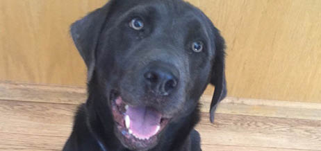
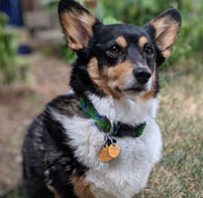
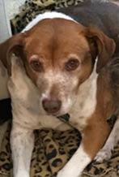
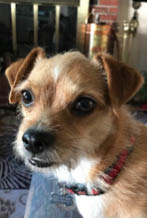
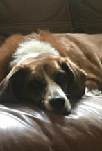
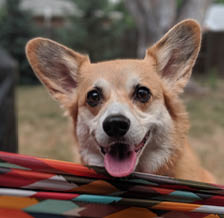
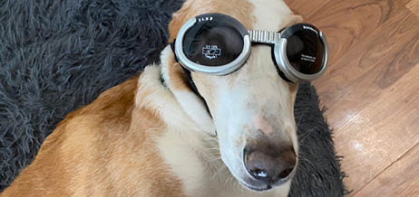
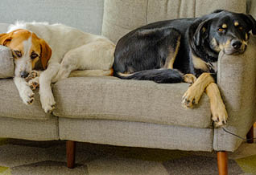
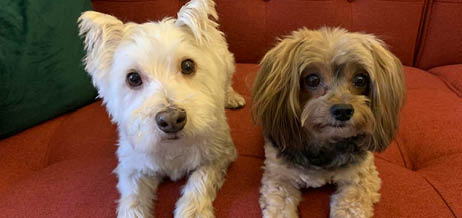
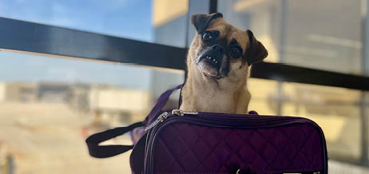
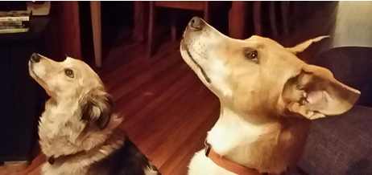
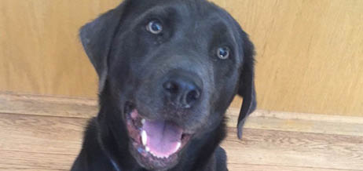
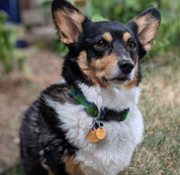
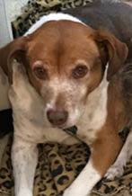
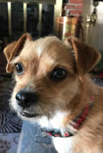
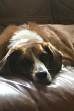
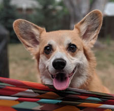
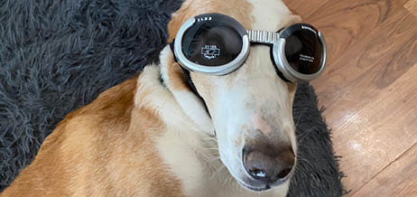
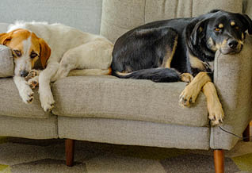
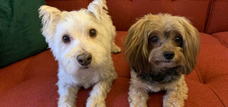
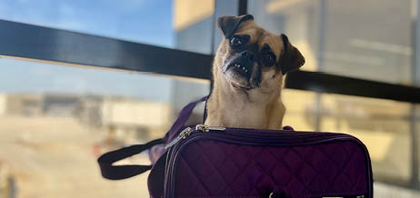
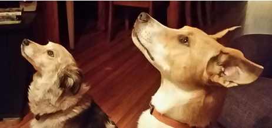